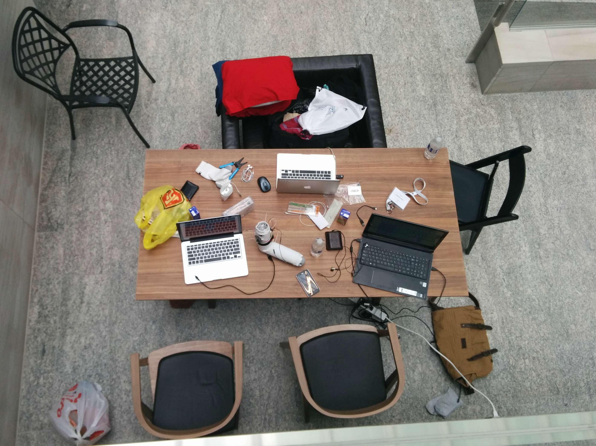
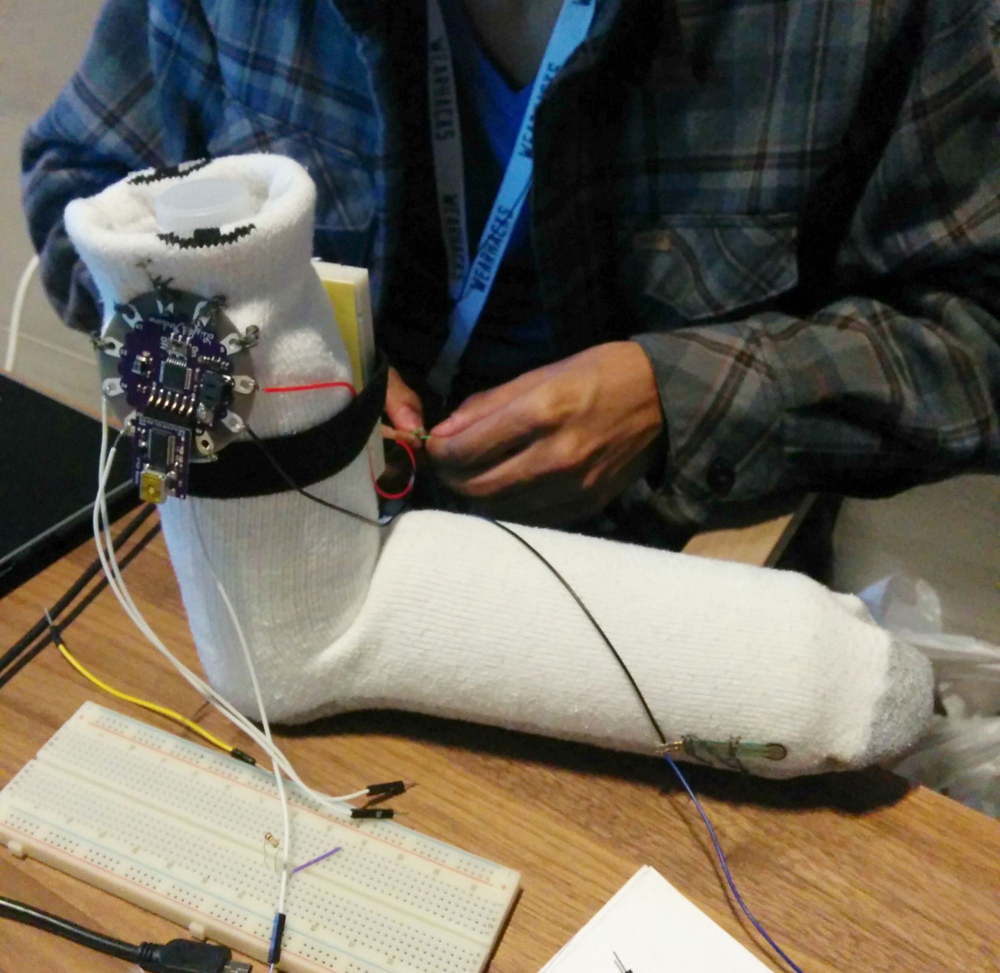

Sensock Biometric Smartwear http://sensock.github.io
In May 2015, I travelled to the MaRS Discovery District in Toronto - one of the world’s largest urban innovation hub, for the wearables and IoT hackathon WearHacks.
Idea
Remote health monitoring solutions combine specialized hardware and software to collect various biometric data from an individual. Whether its assisting patients suffering from a chronic illness, recovering from a hospital stay, or families wishing to keep track of a loved one, there is some level of physical impairment. Thus, the selection of remote monitoring solutions continues to grow at a rapid rate.
Furthermore, with the growing solutions implementing Wearable Technology and the Internet of Things, we realized most biometric data could be collected off wearables such as fitness trackers or smartwatches.
However, as we focus on a different demographic, i.e. patients and elders, we realised the need for wearables that are non-obstrusive and non-instrusive. Patients don’t like being reminded that they are sick, and therefore the existing Wearable Technology solutions in the case of medical monitoring do not act in favor of the patient, but are rather uncomfortable and a pain to the patient.
Thus, tapping into a simple ubiquitous garment such as a sock that we all wear socks on a daily basis, we built a sensor network within an existing garment.
In our solution, Sensock, a hospital care giver, a doctor or a loved one can have access to this biometric data at any point in time (via a website) while not being physically present in the patient’s room to review the readings. This acts as an effective warning system, identifying problems or issues early enough to prevent the need for dangerous circumstances.
Tinkering
In order to embed our microprocessor into the sock, we used a Arduino Lillypad, designed for textiles and wearables and sewed it to the sock!
Building Sensock required a lot of planning, soldering, breadboard circuitry, programming and coffee.

After burning various sensors, and after multiple visits to Creatron Inc and Home Hardware, we were finally able to build a sensor network which could read data off a human!
In addition to building the hardware, we implemented two APIs. Plotly for data visualisation of the biometrics in real time, and Twillio for emegency text message paging upon tapping one’s foot on the side of the door.
Prototype
Team
- Rashad Ajward
- Imran Jameel
- Julien Brillon